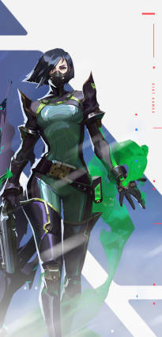
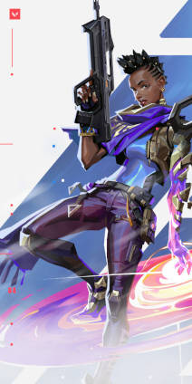

Controladores
Brimstone
// BIOGRAFIA
Vindo diretamente dos EUA, o arsenal orbital do Brimstone garante que o esquadrão dele sempre esteja em vantagem. Sua capacidade de oferecer utilitários com precisão e segurança faz dele um comandante inigualável na linha de frente.
Viper
// BIOGRAFIA
Viper, a química dos Estados Unidos, emprega uma variedade de dispositivos químicos venenosos para controlar o campo de batalha e prejudicar a visão do inimigo. Se as toxinas não matarem a presa, seus jogos mentais certamente o farão.
Omen
// BIOGRAFIA
Omen, uma lembrança fantasmagórica, caça nas sombras. Ele cega os inimigos, teleporta-se pelo campo e deixa a paranoia assumir o controle enquanto o adversário tenta descobrir de onde virá seu próximo ataque.
Astra
// BIOGRAFIA
Astra, a Agente ganense, utiliza energias cósmicas para moldar o campo de batalha a seu bel-prazer. Com total domínio da sua forma astral e um talento estratégico nato, ela está sempre anos-luz à frente dos inimigos.
Harbor

// BIOGRAFIA
Vindo do litoral indiano, Harbor entra em campo com a força da tormenta, empunhando tecnologia ancestral com domínio sobre a água. Ele libera corredeiras espumantes e ondas esmagadoras para proteger seus aliados ou atacar aqueles que se opõem a ele.
Duelistas
Phoenix
// BIOGRAFIA
Chegando com tudo diretamente do Reino Unido, o poder estelar de Phoenix reluz em seu estilo de luta, incendiando o campo de batalha com luz e estilo. Tendo ajuda ou não, ele entra na luta como e quando achar que deve.
Reyna
// BIOGRAFIA
Criada no coração do México, Reyna domina o combate individual, destacando-se a cada abate efetuado. Sua capacidade só é limitada por sua própria perícia, tornando-a bastante dependente de desempenho.
Jett
// BIOGRAFIA
Representando a Coreia do Sul, sua terra natal, Jett tem um estilo de luta ágil e evasivo que permite que ela assuma riscos como ninguém. Ela corre em meio a qualquer confronto, cortando os inimigos antes mesmo que eles percebam quem ou o que os atingiu.
Raze
// BIOGRAFIA
Raze chega do Brasil com uma explosão de carisma e armas enormes. Com seu estilo de jogo "porradeiro", ela é craque em desentocar inimigos entrincheirados e limpar espaços apertados com uma bela dose de BUUUM!
Yoru
// BIOGRAFIA
Yoru, nativo do Japão, abre fendas na realidade para infiltrar as linhas inimigas sem ser visto. Ele usa tanto artimanhas quanto táticas agressivas, e os alvos são abatidos sem saber de onde o ataque veio.
Neon
// BIOGRAFIA
Neon, nossa Agente filipina, avança em velocidades incríveis, descarregando surtos de radiância bioelétrica tão rapidamente quanto seu corpo consegue gerá-los. Ela corre à frente para pegar os inimigos de surpresa, abatendo-os mais rápido do que um raio.
Iso
// BIOGRAFIA
Iso é um mercenário chinês que entra em estado de fluxo para desmantelar os oponentes. Ele reconfigura a energia do ambiente para se proteger de balas e avança totalmente focado em direção ao próximo duelo até a morte.
Iniciadores
Sova
// BIOGRAFIA
Nascido sob o eterno inverno das tundras russas, Sova rastreia, encontra e elimina inimigos com eficiência e precisão implacáveis. Seu arco personalizado e suas habilidades inigualáveis de reconhecimento garantem que nenhuma presa escape.
Breach
// BIOGRAFIA
Breach, o homem-biônico sueco, dispara poderosos jatos cinéticos para forçar a abertura de um caminho pelo território inimigo. O dano e a interrupção que ele causa garantem que nenhuma luta seja justa.
Skye
// BIOGRAFIA
Mandando um salve direto da Austrália, Skye e sua equipe de feras desbravam territórios hostis. Com seus poderes de cura e suas criações que partem pra cima dos inimigos, qualquer equipe ficará mais forte e mais segura tendo Skye como aliada.
KAY/O
// BIOGRAFIA
KAY/O é uma máquina de guerra construída com um único propósito: neutralizar Radiantes. Ele é capaz de Suprimir habilidades inimigas, anulando a capacidade de contra-ataque dos adversários e dando a si e a seus aliados uma vantagem essencial em combate.
Fade
// BIOGRAFIA
Fade, uma caçadora de recompensas turca, usa o poder dos pesadelos para capturar os segredos dos inimigos. Personificando o próprio terror, ela persegue os alvos e revela seus medos mais profundos para, depois, destruí-los na escuridão.
Gekko
// BIOGRAFIA
Gekko, de Los Angeles, lidera um grupo muito unido de criaturas caóticas. Seus amigos atropelam tudo, tirando os inimigos do caminho. Depois, Gekko corre atrás deles para reagrupá-los e reiniciar o processo.
Sentinelas
Sage
// BIOGRAFIA
Como uma verdadeira fortaleza chinesa, Sage traz segurança para si mesma e para a equipe aonde quer que vá. Capaz de reviver aliados e rechaçar investidas agressivas, ela oferece um centro de calmaria em meio ao caos da batalha.
Cypher
// BIOGRAFIA
Cypher, um vendedor de informações do Marrocos, é uma verdadeira rede de vigilância de um homem só que fica de olho em cada movimento dos inimigos. Nenhum segredo está a salvo. Nenhuma manobra passa despercebida. Cypher está sempre vigiando.
Killjoy
// BIOGRAFIA
Killjoy, uma alemã genial, defende posições-chave no campo de batalha facilmente com seu arsenal de invenções. Se o dano causado por seu equipamento não der cabo dos inimigos, os efeitos negativos de seus queridos robôs darão conta do recado.
Chamber
// BIOGRAFIA
Bem-vestido e armado até os dentes, o criador de armas francês Chamber coloca os inimigos para correr com precisão mortal. Use e abuse do arsenal personalizado dele para segurar posições e abater inimigos de longe, criando a defesa perfeita para qualquer plano.
Deadlock
// BIOGRAFIA
A agente norueguesa Deadlock posiciona uma gama de nanofios de alta tecnologia para proteger o campo de batalha até mesmo do ataque mais letal. Ni3nguém escapa do seu olhar vigilante. Ninguém sobrevive à sua ferocidade implacável.
| Controladores | Duelistas | Iniciadores | Sentinelas |
|---|---|---|---|
| Brimstone | Phoenix | Sova | Sage |
| Viper | Reyna | Breach | Cypher |
| Omen | Jett | Skye | Killjoy |
| Astra | Raze | KAY/O | Chamber |
| Harbor | Yoru | Fade | Deadlock |
| Neon | Gekko | ||
| Iso | Total de agentes | 23 |